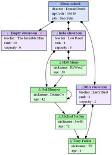
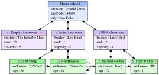

In the first tutorial, we've seen how to let emf2gv generate a default diagram for a given model. In this tutorial, we will see how to start customizing a diagram.
Emf2gv takes as input the following data :
If we let emf2gv generate a default diagram as in the first tutorial, a default graphical description is generated. If we want to start to customize the diagram, we have to create a graphical description and modify it.
This tutorial is based on a School / Classroom / Student model provided by the EMF Tools Samples feature which is available on the update site of the EMF Tools Project (see the installation page for more details).
MyProject (or use the on you created in the first tutorial)sample.graphdesc by using the creation wizard (follow the instructions of this pagesample.graphdesc file, select Run as > Emf To Graphviz Transformationsample.school resource in the popup windowYou should get the following result :
sample.graphdesc)TopDownsample.graphdesc file, select Run as > Emf To Graphviz Transformation
You should get the following result :

sample.graphdesc)truesample.graphdesc file, select Run as > Emf To Graphviz Transformation
You should get the following result :
Now that you are familiar with editing the graphical description, we suggest you to modify it by :
You should then tests several advanced features by :